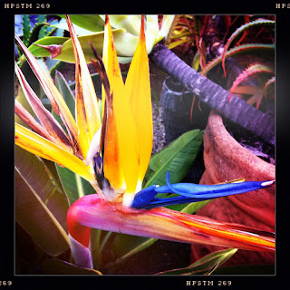

Recovered weblog entry
Bird of Paradise

I've been sifting through the pictures I took during our trip to La Jolla back in March and decided a few of them deserve the chance to be posted, if only a little bit late This was taken just after arriving at our destination. Just looking at it makes me want to go back.